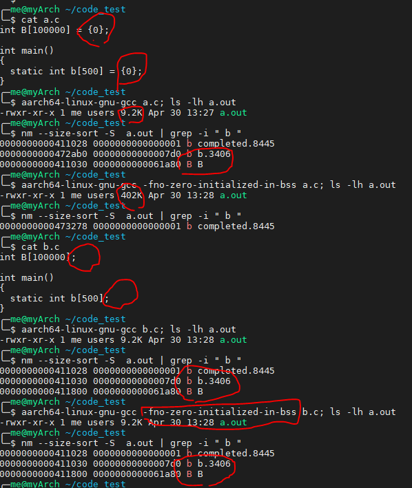

Lab 5 : Virtual memory¶
Introduction¶
In the previous lab, you implemented multitasking without virtual memory. Such implementation works well if the task code and the kernel code are compiled into one single program and share the same address space.
However, things get tricky after you get multiple user programs for different tasks. For example, programs may use the same linker script and their .text segments would use the same memory address.
Hence, virtual memory is here to provide an ideal memory layout for user programs. Each user task can access memory as if it has entire control to the address space. Under the hood, kernel maps virtual memory to physical memory and prevents invalid memory access.
Goals of this lab¶
Understand ARMv8-A virtual memory system architecture.
Understand how to design paging bookkeeping.
Understand how to design multitasking with virtual memory.
Understand how user programs loaded.
Understand how to prevent invalid memory access.
Understand how demand paging works.
Understand how copy-on-write works.
Background¶
Terminology¶
Translation levels¶
To translate a virtual address to a physical address, it involves levels of translation. ARMv8-A has 2 to 4 levels of translation for different configurations and has the second stage translation for hypervisor.(not used in labs)
We name each level as in Linux. The top level is page global directory (PGD) followed by page upper directory (PUD), page middle directory (PMD), and page table entry(PTE).
The entries of PUD, PMD, and PTE could point to page frames. Hence, it provides different levels of translation.
Page vs Page frame vs Page table¶
Page : A chunck of virtual memory pointed by one entry of PTE.
Block : A chunck of virtual memory pointed by one entry of PUD or PMD.
Page frame : A chunck of physical memory.
Page table : A page frame whose entries point to the next level page tables, blocks, or pages . In this documentation, PGD, PUD, PMD and PTE are all called page table.
Page’s descriptor¶
As mentioned earlier, each entry of a page table point to the next level page table, a block, or a page. The entry is combined with the page frame physical address and attributes of the region.
We list the necessary content for you.
Descriptor’s format(simplified)¶
Entry of PGD, PUD, PMD which point to a page table
+-----+------------------------------+---------+--+
| | next level table's phys addr | ignored |11|
+-----+------------------------------+---------+--+
47 12 2 0
Entry of PUD, PMD which point to a block
+-----+------------------------------+---------+--+
| | block's physical address |attribute|01|
+-----+------------------------------+---------+--+
47 n 2 0
Entry of PTE which point to a page
+-----+------------------------------+---------+--+
| | page's physical address |attribute|11|
+-----+------------------------------+---------+--+
47 12 2 0
Invalid entry
+-----+------------------------------+---------+--+
| | page's physical address |attribute|*0|
+-----+------------------------------+---------+--+
47 12 2 0
Attributes used in the lab¶
- Bits[54]
The Unprivileged execute-never bit, non-executable page frame for EL0 if set.
- Bits[53]
The Privileged execute-never bit, non-executable page frame for EL1 if set.
- Bits[47:n]:
The physical address the entry point to. Note that the address should be aligned to \(2^n\) Byte.
- Bits[10]
The access flag, a page fault is generated if not set.
- Bits[7]
0 for read-write, 1 for read-only.
- Bits[6]
0 for only kernel access, 1 for user/kernel access.
- Bits[4:2]
The index to MAIR.
- Bits[1:0]
Specify the next level is a block/page, page table, or invalid.
警告
If you set Bits[7:6] to 0b01, which means user can read write the region, then kernel is automatically not executable in that region no matter what the value of Bits[53] is.
AArch64 memory layout¶
In 64 bit virtual memory system, the upper address space is for kernel and the lower address space is for user.

備註
The entire accessible physical address could be linearly mapped by to offset 0xffff_0000_0000_0000 for kernel access in the labs. It simplfies the design.
Configuration¶
ARMv8-A has the elasticity for different configurations. You can change the granularity of paging, the addresible region, etc. To keep everything simple, the following configuration is specified for this lab.
Disable instruction cache.
Disable data cache.
Addresible region is 48 bit.
Page granule size is 4KB.
Not use address space ID (ASID).
Reference¶
So far, we briefly introduce the concept of virtual memory and ARMv8-A virtual memory system architecture. For details, you can refer to
The AArch64 Virtual Memory System Architecture of ARMv8-A Architecture Reference
Required¶
Requirement 1¶
We provide a step by step tutorial to guide you how to make your original kernel works with virtual memory. However, we only give necessary explaination in each step. For details, please refer to the manual.
Translation Control Register (TCR)¶
Paging is configured by TCR. The following basic configuration is used in this lab.
#define TCR_CONFIG_REGION_48bit (((64 - 48) << 0) | ((64 - 48) << 16))
#define TCR_CONFIG_4KB ((0b00 << 14) | (0b10 << 30))
#define TCR_CONFIG_DEFAULT (TCR_CONFIG_REGION_48bit | TCR_CONFIG_4KB)
ldr x0, = TCR_CONFIG_DEFAULT
msr tcr_el1, x0
required 1-1 Set up TCR_EL1.
Memory attribute indirection register (MAIR)¶
Brief introduction¶
MMU has different memory access policies for different memory regions.
Memory access policies are encoded as attributes and store in MAIR.
To select attribute for a certain memory region, each page table’s entry contains the index to the attribute. (refer to Attributes used in the lab)
When MMU get a virutal address, it get the index from the page table’s entry and looks up MAIR to get the memory attribute. Then, it access the memory with different access policies.
Lab implementation¶
The following two attributes are used in the lab.
Device memory nGnRnE:
Peripheral access.
The most restricted memory access.
Normal memory without cache:
Normal RAM access.
Memory gathering, reordering, and speculative execution are possible but without cache.
#define MAIR_DEVICE_nGnRnE 0b00000000
#define MAIR_NORMAL_NOCACHE 0b01000100
#define MAIR_IDX_DEVICE_nGnRnE 0
#define MAIR_IDX_NORMAL_NOCACHE 1
ldr x0, =( \
(MAIR_DEVICE_nGnRnE << (MAIR_IDX_DEVICE_nGnRnE * 8)) | \
(MAIR_NORMAL_NOCACHE << (MAIR_IDX_NORMAL_NOCACHE * 8)) \
)
msr mair_el1, x0
required 1-2 Set up MAIR_EL1.
Identity paging¶
Enable the MMU is the first step for virtual memory. You can start from identity paging with two level translation.
In two level translation you only need PGD and PUD. Each entry of PUD points to an 1GB block. Hence, you only need
The first entry of PGD which points to PUD
The first two entries of PUD.
The first one maps 0x00000000 - 0x3fffffff (RAM and GPU peripherals)
The second one maps 0x40000000 - 0x7fffffff(ARM local peripherals).
setup
2 page frames, PGD and PUD.
PUD’s entries are blocks.
Map all memory as Device nGnRnE.
#define PD_TABLE 0b11
#define PD_BLOCK 0b01
#define PD_ACCESS (1 << 10)
#define BOOT_PGD_ATTR PD_TABLE
#define BOOT_PUD_ATTR (PD_ACCESS | (MAIR_IDX_DEVICE_nGnRnE << 2) | PD_BLOCK)
mov x0, 0 // PGD's page frame at 0x0
mov x1, 0x1000 // PUD's page frame at 0x1000
ldr x2, = BOOT_PGD_ATTR
orr x2, x1, x2 // combine the physical address of next level page with attribute.
str x2, [x0]
ldr x2, = BOOT_PUD_ATTR
mov x3, 0x00000000
orr x3, x2, x3
str x3, [x1] // 1st 1GB mapped by the 1st entry of PUD
mov x3, 0x40000000
orr x3, x2, x3
str x3, [x1, 8] // 2nd 1GB mapped by the 2nd entry of PUD
msr ttbr0_el1, x0 // load PGD to the buttom translation based register.
mrs x2, sctlr_el1
orr x2 , x2, 1
msr sctlr_el1, x2 // enable MMU, cache remains disabled
If you set up correctly, you can print message by UART.
required 1-3 Set up identity mapping.
Map kernel to the upper address space¶
As mentioned above, the kernel space is the upper address space. Now, you need to modify your linker script to make your kernel image can be mapped to the upper address space.
SECTIONS
{
. = 0xffff000000000000; // kernel space
. += 0x80000; // kernel load address
_kernel_start = . ;
// ...
}
// ...
msr ttbr0_el1, x0
msr ttbr1_el1, x0 // also load PGD to the upper translation based register.
mrs x2, sctlr_el1
orr x2 , x2, 1
msr sctlr_el1, x2
ldr x2, boot_rest // indirect branch to the virtual address
br x2
boot_rest:
// ...
required 1-4 Modify linker script and map the upper address space.
question 1 Without indirect branch, the code might still work fine, why it’s the case and why it’s mandatory to use indirect branch.
備註
Memory mapped IO address may also need to be modified.
A finer granularity kernel mapping¶
The granularity of two level translation is 1GB. In the previous setting, all memory regions are mapped as device memory.
However, unaligned access of device memory causes alignment fault and the compiler sometimes generates unaligned access. Hence, you should map most of the RAM as normal memory and MMIO region as device memory.
Then, you should use three level translation(2MB) or four level translation(4KB) for linear mapping.
required 1-5 Linear map kernel with finer granularity and map RAM as normal memory.
question 2 For mapping 1GB memory region, how many page frames are used by page tables(PGD, PUD, PMD, and PTE) in four level translation?
Requirement 2¶
Page Bookkeeping¶
With paging enabled, you can treat physical memory as set of page frames. Page frames are valuable resource and can be used for different purposes such as
memory pool for kernel objects
file cache
physical memory for user space.
Same as struct task , you need to design your own struct page.
Each struct page refer to one page frame.
Your kernel bookkeeps the the use of the page frame in struct page.
required 2-1 Implement page bookkeeping.
備註
Some physical memory regions are already in used (e.g. the memory region used by the kernel image). Hence, you need to mark the corresponding page frames as in used.
提示
Rpi3 has 1GB RAM and the page size is 4KB, so a statically declared array struct page[262144] is enough to bookkeep the status of page frames.
You can also declare a smaller array such as struct page[1000], and only use 1000 page frames in this lab.
Page frame number¶
To keep track of each page frame, you can use page frame number(PFN) to index them.
The PFN of physical address is [47:12] bitfield.
You can also use PFN to index the struct page array.
It’s common to translate kernel virtual address, physical address, PFN and the reference to struct page.
You should implement the translation function for future use.
Kernel virtual address : 0xffff000012345678
Physical address : 0x0000000012345678
|___________|
PFN
PFN : 0x0000000000012345
page descriptor : struct page[0x12345]
required 2-2 Implement the translation function between kernel virtual address, physical address, PFN and the reference to struct page.
page_alloc, page_free¶
You need to implement the allocation and free of a page frame. For each allocated page frame, initialize it to 0.
required 2-3 Implement page_alloc and page_free.
question 3 If a page frame is allocated and to be mapped at user space. Is it necessary to initialize it into 0?
備註
The next lab’s subject is allocator, you’ll re-write everything for page initialization and allocation. Hence, keep it simple.
Requirement 3¶
Multitasking revisiting¶
In the previous lab, you implemented multitasking without MMU. Now with MMU enabled, you can create different address space for different user tasks.
User space paging¶
PGD allocation¶
Different address spaces for user tasks can be achived by setting TTBR0_EL1 to different PGDs.
On user task creation, a page frame is allocated as PGD for task’s address space.
備註
You should use 4KB page for user task in this lab, so you need PGD, PUD, PMD, and PTE for four layer translation.
User space mapping¶
Same as kernel space mapping, you need to iteratively fill in the entries of page tables from PGD -> PUD -> PMD -> PTE.
During this process, the next level page tables such as PUD, PMD, and PTE may not already present. You should allocate one page frame as the next level page table then fill in its entry.
required 3-1 Implement user space paging.
User program loader¶
In general purpose OS, the user code should be compiled to a program and to be loaded by OS. Now, you need to implement a user programe loader. Your kernel loads the user program and create a new user virtual address space.
In the required part, you only need to implement the raw binary loader. It’s simpler but with some downsides such as the loader can’t distinguish the segments of the program.
User library¶
Remember that your first program in C.
You only write the main function and return 0, and your code magically works.
Actually, your main is called by libc or crt library, and after returning from main, it also calls exit for you.
Now, you should implement a minimum user library. It provides the entry point, call exit after return from main, and encapsulate system calls as APIs.
The user library also need to provide common functions such as print, memory copy. These functions may rely on system calls, user library should wrap it and hide the details for programmers. Programmers only need to write the main function and link to the library for other utilities.
required 3-1 Implement a minimum user library.
Implement shell as an user program¶
You should write your user shell, compile it and link to your minimum user library. There is one pitfall that the raw binary loader can’t get the information about .bss from raw binary.
Hence, you’d better prevent creating .bss. When you need 0 initialized global/static variables, you should explicitly 0 initialize it and add -fno-zero-initialized-in-bss compiler flag. Then, the variables will be put into .data and be preserved after objcopy.
The following picture shows how to create 0 initialized data to .data.
required 3-2 Implement shell as an user program and use objcopy to turn the ELF file into a raw binary.
Embed compiled binary to kernel¶
Two approaches are provided for you to embed binaries into your kernel. Both makes encapsulate the binary as an object file, and you can link it to kernel and get them by symbol’s virtual address.
By ld
ld -r -b binary <input bin> -o <output name>
It creates an linkable binary object with 3 symbols,
_binary_<input name>_start
_binary_<input name>_end
_binary_<input name>_size
By assembler
.incbin is an assembler directive.
.global bin_start
bin_start:
.incbin "<input_file>"
required 3-3 Embed your shell binary to kernel image.
Raw binary loading and mapping¶
Your shell is now embeded into your kernel image and your kernel image can get it by the binary start symbol.
You should replace the function pointer argument in do_exec by binary start symbol.
In do_exec, it acts as a binary loader and do the following things.
Allocate user’s virtual address space(PGD).
Allocate page frames and maps the memory region for the raw binary.
Copies the raw binary to the memory region.
備註
The loader can’t distinguish segments of raw binary, so you can just map the entire binary as read/write/exectable.
提示
If you are not sure what’s the virtual address to be mapped, you can use readelf -l <compiled_ELF>. to get the VirtAddr of the 1st LOAD segment.
Then hard-code it as the virtual address start and map the entire program binary.
User stacks with the same virtual address¶
In the previous lab, user stacks are statically declared and each task use different address for its user stack. With virtual memory, each task has its address space and can refer to different physical address with the same virtual address. Therefore, each user task can use the same virtual address to their own user stack.
Change your user stack implementation to:
Dynamically allocate one page frame for the user stack.
All user tasks use the same virtual address 0x0000_ffff_ffff_e000 for user stack..
You should map the address to the allocated page frame.
required 3-4 Allocate one page frame for user stack and map user task’s stack to the common address.
備註
Currently, kernel stacks are still statically declared and allocated. Kernel stack allocation will also be dynamically allocated in the next lab.
Context Switch¶
To switch between tasks with different address spaces, you can load translation based register(TTBR0_EL1) with different PGD.
In addition, you might need memory barriers to guarantee previous instructions are finished. Also, a TLB invalidation is need because the old values are staled.
ldr x0, = next_pgd
dsb ish // ensure write has completed
msr ttbr0_el1, x0 // switch translation based address.
tlbi vmalle1is // invalidate all TLB entries
dsb ish // ensure completion of TLB invalidatation
isb // clear pipeline
required 3-4 Set TTBR0_EL1 to switch between different address space when context switch.
Requirement 4¶
Page frame reclaim¶
After an user task exits, the page frames allocated by the user task including page tables should be reclaimed by the exited user task itself. So, the remaining number of page frames should be the same before a user task create and after it exit,
required 4-1 Implement page frame reclaim.
備註
User task can reclaim the allocated page frames itself because those page frames are only used for user space. And an exited zombie should never access user space anymore.
However, some memory resource such as kernel stack should not be reclaimed by an exited zombie itself because it’s still using it. And the task reaper will reclaim it.
Simple page fault handler¶
When CPU access a non-mapped address, a page fault exception is taken. You should print the fault address store in FAR_EL1 in the kernel mode and kill the user task.
required 4-2 Implement simple page fault handler.
Test commands¶
The following test commands are recommended to be added to your user shell to test the requirements. If you don’t follow it, you need to guarantee that your testing code meet our requirements.
void test_command1() { // test fork functionality
int cnt = 0;
if(fork() == 0) {
fork();
fork();
while(cnt < 10) {
printf("task id: %d, sp: 0x%llx cnt: %d\n", get_taskid(), &cnt, cnt++); // address should be the same across tasks, but the cnt should be increased indepndently
delay(1000000);
}
exit(0); // all childs exit
}
}
void test_command2() { // test page fault
if(fork() == 0) {
int* a = 0x0; // a non-mapped address.
printf("%d\n", *a); // trigger simple page fault, child will die here.
}
}
void test_command3() { // test page reclaim.
printf("Remaining page frames : %d\n", remain_page_num()); // get number of remaining page frames from kernel by system call.
}
Elective¶
mmap¶
You use different address space for different tasks, so different tasks are unable to touch others』 memory. However, It’s common that programmers accidentaly touch a memory region they should not do in its own address space. Kernel should notice that is an invalid access.
You can divide the user address space into several regions with different protection such as read-executalbe for code, read-write for normal data, and read-only for read only data.
mmap is the system call to create such regions.
Each region can be mapped to a file or anonymous page(the page frames not related any file).
Then, users can create heap, memory mapped file by the system call.
Besides, kernel also use it for program loader implementation. The loading of a program can be done by memory mapped file. Memory regions for .bss and user stack can be done by anonymous page mapping.
API specification¶
- (void*) mmap(void* addr, size_t len, int prot, int flags, void* file_start, int file_offset)
kernel use addr and len to create new region.
If addr is NULL, kernel decides the new region’s start address
If addr is not NULL
If the new region overlap with existing regions, or addr is not page aligned
If MAP_FIXED is set,
mmapis failedOtherwise, kernel takes addr as hint and decides the new region’s start address.
Otherwise, kernel use addr as new region’s start address.
The memory region created by
mmapshould be page aligned, if the len is not multiple of page size, elevate it to be align to page.
prot specify the regions access protection
PROT_NONE : not accessible
PROT_READ : readable
PROT_WRITE : writable
PROT_EXEC : executable
The following flags should be implemented
MAP_FIXED: New region’s start should be addr, or the
mmapis failedMAP_ANONYMOUS: New region is mapped to anonymous page. It’s usaully used for stack and heap.
MAP_POPULATE: After
mmap, it directly do Region page mapping.(You don’t have to implement it if you implement demand paging)
file_start specify the mapped file.
Originally, it should be a file descriptor, but the filesystem is not implemented yet.
So, file_start is set to the binary’s start symbol for workaround.
file_offset specify the new region’s start from the offset of the mapped file.
The file_offset should be page aligned.
備註
You don’t need to handle the case that the new mmap region overlap existing regions.
We use memory mapped file for ELF loader, if you don’t implement ELF loader, you don’t need to implement file_start, file_offset, and MAP_FIXED.
elective 1-1 Implement mmap for creating a new region.
Region page mapping¶
Once a region is created, kernel could create page mapping for the region.
If the region is mapped to an anonymous page frames
Allocate page frames
Map memory region to page frames and the page attributes are set according to region’s protection policy.
If the region is mapped a file
Allocate page frames
Map memory region to page frames and the page attributes are set according to region’s protection policy.
Copy the file content to the memory region.
elective 1-2 Implement Region page mapping.
ELF loader¶
ELF parsing¶
The difference between raw binary and ELF is the header. You can get segments information by parsing the ELF file’s header
To implement a ELF loader, you only need to care about ELF header and program headers. The following are struct member you need to use for loading a statically linking ELF.
ELF header¶
e_entry: The ELF’s entry point, you need to set user exception return address to it.
e_phoff: The offset of program headers from ELF’s file start.
e_phnum: The number of program headers
Program header¶
p_type: The type of program header, you only need to care about PT_LOAD (LOAD segments).
p_vaddr: The virtual address should be loaded to.
p_offset: The offset to start of ELF.
p_align: p_vaddr \(\equiv\) p_offset (mod p_align)
p_filesz: The file size, contains .text, .data, etc.
p_memsz: The memory size of the segment. It usualy equals to p_filesz. If the segment contains .bss, it should be larger than p_filesz
p_flags: The extra flags, you only need to care about rwx.
備註
Don’t confuse the p_offset with file_offset in mmap. p_offset may not be page aligned.
Don’t confuse the p_vaddr with addr in mmap. p_vaddr may not be page aligned.
elective 2-1 Parse the ELF header.
提示
You can check the correctness by readelf -l <your ELF> on linux
ELF mapping¶
You can use mmap to create regions for the ELF file according to the LOAD segments in program headers.
Normally, you can use
mmap(p_vaddr, p_filesz, p_flags, MAP_FIXED | MAP_POPULATE, bin_start, p_offset); // MAP_POPULATE can be removed if demand paging implemented
to create a memory region, and Region page mapping can do the mapping and copying jobs for you.
However, there are some cases you need to care about:
p_memsz > p_filesz¶
It usually happens in .bss and .data are in one LOAD segment, or .bss has its own LOAD segment. In this case, .data should still map to the ELF file but .bss should map to anonymous page frames by seting MAP_ANONYMOUS because it’s not backed by the ELF file.
If unfortunately, .bss and .data are in the same segment and their boundary is at the middle of a page frame. You should
Do the same thing as normal file mapping region as in Region page mapping
Set the region’s belong to .bss in the page frame to be 0 because .bss should be 0 initialized.
備註
If you implement demand paging, you should pre-fault on the .data and .bss boundary and make .bss’s head 0 initialized.
p_vaddr and p_offset are not page aligned¶
The region created by mmap should be page aligned.
With the MAP_FIXED flag, some parameters need to be modified
addr should be set to p_vaddr - (p_vaddr MOD page_size)
file_offset should be set to p_offset - (p_offset MOD page_size)
len should be set to p_filesz + (p_offset MOD page_size)
elective 2-2 Implement ELF mapping.
Page fault handler & demand paging¶
The page frames are pre-allocated in previous exercise. However, user program might allocate a huge space on heap or memory mapped files. Kerenl waste time and memory on this things.
In this exercise, you need to allocate page frames for stack on demand. You only allocate PGD in the beggining, the others are delayed.
When a page fault is generated,
If the fault address is not part of any region in the address space,
a segmentation fault is generated and the task should be killed.
If it’s part of one region,
Follow Region page mapping but only map one page frame. for the fault address.
elective 3 Implement demand paging.
Copy on write¶
When a task call fork to create a child task, you need to copy all the page frames owned by the parent task in the previous implementation. Otherwise, a write by either child or parent might not be awared by the other one and induce error.
However, an exec followed by fork is quite common in UNIX programming. The original mapping of child task would be destoryed and you waste a lot of time on copying never used page frames. Hence, a copy-on-write mechanism comes to help these odds.
The following statements are how you can implement copy-on-write.
On fork a new task¶
Copy the page frames of page tables.
Then mark PTE entries of both child and parent to be read-only even for a original read-write page.
When either childs or parent write to that page¶
A permission fault is generated because the PTE entry marks as read-only, then you should
Check the region’s permission in the address space.
If the corresponding region is read-only, then the segmentation fault is generated because user trying to write a read-only region.
If the corresponding region is read-wrtie, then it’s a copy-on-write fault.
Kernel should allocate one page frame, copy the data, and modify the table’s entry to be correct permission.
備註
Because fork may be executed many times, page frames are shared by many childs and one parent, so you need reference count for a page frame. And you should not reclaim the page frame if still someone refer to it.
elective 4 Implement copy-on-write.
Test commands¶
The following test commands are recommended to be added to your user shell to test the requirements. If you don’t follow it, you need to guarantee that your testing code meet our requirements.
void read_beyond_boundary(){
if(fork() == 0) {
int* ptr = mmap(NULL, 4096, PROT_READ, MAP_ANONYMOUS, -1, 0);
printf("addr: %llx\n", ptr);
printf("%d\n", ptr[1000]); // should be 0
printf("%d\n", ptr[4097]); // should be seg fault
}
}
void write_beyond_boundary(){
if(fork() == 0) {
int* ptr = mmap(NULL, 4096, PROT_READ | PROT_WRITE, MAP_ANONYMOUS, -1, 0);
printf("addr: %llx\n", ptr);
ptr[1000] = 100;
printf("%d\n", ptr[1000]); // should be 100
ptr[4097] = 100;// should be seg fault
printf("%d\n", ptr[4097]); // not reached
}
}
void wrong_permission(){
if(fork() == 0) {
int* ptr = mmap(NULL, 4096, PROT_READ, MAP_ANONYMOUS, -1, 0);
printf("addr: %llx\n", ptr);
printf("%d\n", ptr[1000]); // should be 0
for(int i = 0; i < 4096; ++i) {
ptr[i] = i+1; // should be seg fault
}
for(int i = 0; i < 4096; ++i) { // not reached
printf("%d\n", ptr[i]);
}
}
}
#pragma GCC optimize("O0")
int stack_overflow(int i){
int a[1024] = {0};
printf("Recursive %d\n", i);
stack_overflow(i + 1);
return a[1023] + i;
}
void test_stack_overflow(){
if(fork() == 0) {
stack_overflow(0);
}
}
void mmaps(){ // test multiple mmaps
if(fork() == 0) {
for(int i = 0; i < 40; ++i){
if ( i < 20 ) {
mmap(NULL, 4096, PROT_WRITE|PROT_READ, MAP_ANONYMOUS, -1, 0);
} else if(i < 30){
mmap(NULL, 4096, PROT_WRITE, MAP_ANONYMOUS, -1, 0);
} else {
mmap(NULL, 4096, PROT_WRITE|PROT_READ, MAP_ANONYMOUS, -1, 0);
}
}
while(1); // hang to let shell see the mapped regions
}
}
void mmap_unalign(){
if(fork() == 0) {
printf("0x%llx", mmap((void*)0x12345678, 0x1fff, PROT_WRITE|PROT_READ, MAP_ANONYMOUS, -1, 0)); // should be a page aligned address A and region should be A - A +0x2000
while(1); // hang to let shell see the mapped regions
}
}
void write_text() {
if(fork() == 0){
int* pc;
asm volatile(
"adr %0, ."
:"=r"(pc)
);
*pc = 0; // seg fault
}
}